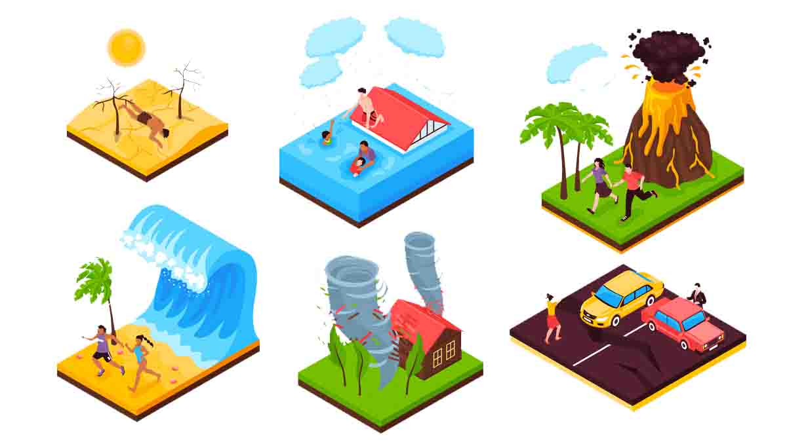

L'objectiu d'aquest projecte és desenvolupar una aplicació mòbil per proporcionar alertes primerenques i recomanacions de seguretat davant de desastres naturals, com ara terratrèmols, huracans i inundacions. El propòsit és reduir el risc i els danys a les persones i els béns materials, en permetre una resposta més ràpida i organitzada davant de situacions d'emergència, basant-se en informació precisa i en temps real.
Aquí podreu conèixer tots els detalls del meu projecte, des del concepte inicial fins a la implementació final. Aquest projecte té com a objectiu resoldre problemes específics a l'àrea de desastres naturals per poder prevenir-los i prendre mesures de precaució.
El propòsit principal d'aquest projecte és reduir el risc i els danys a les persones i els béns materials, en permetre una resposta més ràpida i organitzada davant de situacions d'emergència, basant-se en informació precisa i en temps real.